МИНИСТЕРСТВО
СТРОИТЕЛЬСТВА ПРЕДПРИЯТИЙ
НЕФТЯНОЙ И ГАЗОВОЙ ПРОМЫШЛЕННОСТИ
ВСЕСОЮЗНЫЙ
НАУЧНО-ИССЛЕДОВАТЕЛЬСКИЙ ИНСТИТУТ
ПО СТРОИТЕЛЬСТВУ МАГИСТРАЛЬНЫХ ТРУБОПРОВОДОВ
СТРОИТЕЛЬСТВО МАГИСТРАЛЬНЫХ
И ПРОМЫСЛОВЫХ ТРУБОПРОВОДОВ
Средства и установки
электрохимзащиты
ВСН 009-88
Миннефтегазстрой
Москва 1990
РАЗРАБОТАНЫ: ВНИИСТом Миннефтегазстроя - канд. техн. наук Е.А. Никитенко, канд. техн. наук К.Л. Шамшетдинов, канд. техн. наук Н.П. Глазов, канд. техн. наук В.В. Притула, канд. техн. наук А.М. Ефимова, канд. техн. наук А.В. Благовещенский;
ССО «Нефтегазэлектроспецстрой» - Ю.Н. Константинов, В.В. Котик;
институтом «Гипротрубопровод» - О.Н. Насонов.
ВНЕСЕНЫ: ВНИИСТом Миннефтегазстроя.
ПОДГОТОВЛЕНЫ К УТВЕРЖДЕНИЮ: ГНТУ Миннефтегазстроя - ведущий инженер отдела стандартизации В.В. Кузнецов.
С введением в действие нормативного документа «Строительство магистральных и промысловых трубопроводов. Средства установки электрохимзащиты» ВСН 009-88/Миннефтегазстрой утрачивают силу следующие нормативные документы:
«Инструкция по сооружению установок электрохимической защиты от коррозии линейной части магистральных трубопроводов» ВСН 2-127-81/Миннефтегазстрой;
«Инструкция по протекторной защите внутренней поверхности нефтяных резервуаров от коррозии» ВСН 158-83/Миннефтегазстрой;
«Инструкция по электрохимической защите кожухов на переходах трубопроводов под автомобильными и железными дорогами» ВСН 211-87/Миннефтегазстрой;
«Технические условия на технологическую систему электрохимической защиты подземных трубопроводов с охлаждением транспортируемого продукта «ТСКЗ-холод» РД 102-013-83;
«Технические условия на технологическую систему электрохимическое защиты подземных трубопроводов в северных районах и Западной Сибири «ТСКЗ-СЕВЕР» РД 102-014-83;
«Инструкция по электрохимической защите подземных трубопроводов в северных районах и Западной Сибири» ВСН 155-83/Миннефтегазстрой;
«Инструкция по катодной защите промысловых сооружений» ВСН 174-84/Миннефтегазстрой;
СОГЛАСОВАНЫ: Центртрубопроводстрой - письмо № 06-25-129 от 25.10.88 г.,
Главнефтегазэлектроспецстрой - письмо № 04-8-1795 от 24.10.88 г.;
Главгосгазнадзор - письмо № 11-5-9/276 от 24.10.88 г.,
ВНИИГаз - письмо № 63-4/7065 от 24.10.88 г.;
Главтранснефть - письмо № 9/1675 от 26.10.88 г.
|
Министерство строительства предприятий нефтяной и газовой промышленности (Миннефтегазстрой) |
Ведомственные строительные нормы |
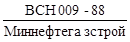 |
|
Строительство магистральных и промысловых трубопроводов. Средства и установим электрохимзащиты |
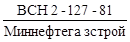 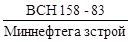 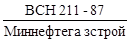 РД 102-014-83 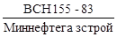 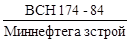 |
1. ОБЩИЕ ПОЛОЖЕНИЯ
1.1. Требования настоящих Ведомственных строительных норм должны соблюдать организации Миннефтегазстроя, выполняющие строительные, монтажные, пусконаладочные работы при сооружении электрохимической защиты от коррозии на магистральных и промысловых трубопроводах.
1.2. Настоящие ВСН распространяются на работы по электрохимической защите магистральных и промысловых трубопроводов на всей территории СССР.
|
Утверждены
Министерством строительства предприятий нефтяной и газовой промышленности |
Срок
введения |
1.3. При сооружении электрохимической защиты, кроме требований настоящих ВСН, следует соблюдать также требования к монтажу отдельных видов оборудования электрохимической защиты, установленные в технической документации заводов - изготовителей оборудования, в технических условиях и других документах, утвержденных в установленном порядке, а также следующие нормы и правила:
ГОСТ 9.015-74 «Единая система защиты от коррозии и старения. Подземные сооружения. Общие технические требования»;
ГОСТ 25812-83 «Трубопроводы стальные магистральные. Общие требования к защите от коррозии»;
ГОСТ 26251-82 «Протекторы для защиты от коррозии. Технические условия»;
ГОСТ 16149-70 «Защита подземных сооружений от коррозии блуждающим током поляризованными протекторами»;
СНиП III-42-80 «Правила производства и приемки работ. Магистральные трубопроводы»;
СНиП 3.05.06-85 «Электротехнические устройства»;
СНиП 3.01.04-87 «Приемка в эксплуатацию законченных строительством объектов. Основные положения»;
СНиП 3.01.01-85 «Организация строительного производства»;
СНиП III-4-80 «Техника безопасности в строительстве»;
Правила устройства электроустановок ПУЭ. - М.: Энергоатомнадат, 1986;
Правила технической эксплуатации электроустановок потребителей и правила безопасности при эксплуатации электроустановок потребителей ПТЭ и ПТБ. - М.: Энергоатомиздат, 1985;
Правила технической эксплуатации магистральных газопроводов. - М.: Недра, 1982;
Положение о техническом обслуживании линейной части магистральных газопроводов. Мингазпром. - М.: ВНИИГАЗ, 1984;
Правила безопасности в нефтедобывающей промышленности, Госгортехнадзор СССР. - М.: Недра, 1974;
Правила техники безопасности при строительстве магистральных стальных трубопроводов. - М.: Недра, 1975;
Правила безопасности при эксплуатации магистральных газопроводов. - М.: Недра, 1985;
Типовая инструкция по организации безопасного проведения огневых работ на взрывоопасных объектах. - М.: Недра, 1975;
Правила устройства и безопасной эксплуатации сосудов, работающих под давлением. - М.: Госгортехнадзор СССР, 1987.
Правила аттестации сварщиков. - М.: Металлургия, 1971;
Правила техники безопасности и производственной санитарии при производстве ацетилена, кислорода и газопламенной обработки металла. - М.; Недра, 1970;
Правила использования и испытания защитных средств, применяемых в электроустановках. - М.: Атомиздат, 1974;
Инструкция по
совмещенному строительству вдольтрассовых ЛЭП 6 - 10 кВ магистральных
трубопроводов 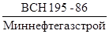
Методические указания по вопросам взаимоотношений генподрядных и субподрядных организаций Миннефтегазстроя в новых условиях хозяйствования. - М.: НИПИЭСУнефтегазстрой, 1981;
Правила о договорах подряда на капитальное строительство. - М.; Стройиздат, 1975;
Положение о взаимоотношениях организаций - генеральных подрядчиков с субподрядными организациями. - М.: Стройиздат, 1977.
1.4. Сооружение устройств электрохимической защиты отличается широким фронтом работ, растянутым на многокилометровой трассе магистрального трубопровода, наличием труднопроходимых для колесного транспорта участков, а также многочисленностью строительно-монтажных операций.
Эффективная работа электрохимической защиты возможна только при высоком качестве монтажа всех конструктивных элементов. Для этого требуется научно обоснованная организация работ, максимальная механизация и высокая квалификация строительно-монтажных рабочих. Так как для защиты трубопроводов применяется ограниченное число типов установок, а элементы электрохимической защиты являются в основном типовыми, следует производить предварительную заготовку основных монтажных узлов и блоков в заводских условиях.
1.5. Для сооружения электрохимической защиты магистральных и промысловых трубопроводов от коррозии следует применять средства и установки катодной, электродренажной, протекторной защиты, электрические перемычки, контрольно-измерительные пункты и конструктивные узлы типовых проектов.
1.6. Оборудование, изделия и материалы, применяемые при монтаже электрохимической защиты, должны соответствовать спецификации проекта, государственным стандартам или техническим условиям и иметь соответствующие сертификаты, технические паспорта, удостоверяющие качество оборудования, изделий и материалов.
1.7. Места размещения средств и установок электрохимической защиты (устройств катодной, электродренажной, протекторной защиты, анодных заземлений, контрольно-измерительных пунктов, электрических перемычек и т.п.) должны соответствовать проекту системы ЭХЗ трубопровода.
1.8. Монтаж электрохимической защиты следует выполнять преимущественно с помощью механизированных методов с применением укрупненных узлов, для чего должны быть предусмотрены:
высокая степень готовности монтажных конструкций и узлов, которые собирают и изготавливают в монтажно-заготовительных мастерских, исключая доводочные и доделочные операции при монтаже и установке этих конструкций и узлов в проектное положение в трассовых условиях;
применение при монтаже механизированного инструмента, специальных приспособлений, машин и механизмов;
рациональное совмещение строительных и монтажных работ.
1.9. Работы по сооружению электрохимической защиты необходимо осуществлять в две стадии.
На первой стадии необходимо выполнять следующие работы:
разметку трасс участка производства работ, ЛЭП и кабелей, подготовку строительной площадки;
выбор и обустройство места для хранения оборудования, монтажных узлов, деталей, метизов, инструментов и материалов;
доставку землеройной техники, машин и механизмов;
подготовку участка для производства работ;
доставку оборудования установки катодной защиты, монтажных узлов, деталей, метизов, инструмента, приспособлений и материалов;
разработку грунта в траншеях и котлованах. Обратную засыпку с трамбовкой после установки оборудования и кабелей до уровня, указанного в рабочей документации;
сооружение анодных и защитных заземлений, монтаж и укладку протекторов;
прокладку подземных коммуникаций;
монтаж катодных и контрольных электрических выводов от трубопроводов, а также контактных соединений анодных, защитных заземлений и протекторных выводов;
установку и закладку в сооружаемые фундаменты несущих опорных конструкций для монтажа оборудования.
При этом хранить оборудование, катодные установки и электродренажную защиту, монтажные узлы, метизы, детали, инструмент, приспособления и материалы на участке производства работ следует в одном, защищенном от атмосферных осадков месте.
Работы первой стадии следует вести одновременно с основными строительными работами по технологической части трубопровода.
Во второй стадии необходимо осуществлять работы по установке оборудования, подключение к нему электрических кабелей, проводов и индивидуальное опробование электрических коммуникаций и установленного оборудования.
Работы второй стадии должны быть выполнены, как правило, после окончания основных видов строительных работ и одновременно с работами специализированных организаций, осуществляющих пуск, опробование и наладку средств и установок электрохимической защиты по совмещенному графику.
1.10. Строительно-монтажные работы, выполненные как по элементам и частям, так и по законченным объектам, должны иметь оценку качества согласно инструкции по оценке качества для данного вида строительно-монтажных работ.
1.11. Части установок электрохимической защиты, которые размещены под землей, можно засыпать грунтом только после того, как они освидетельствованы, получено письменное согласие на их засыпку от представителя заказчика и оформлен двусторонний акт на скрытые работы. Качество изоляции контактных соединений анодных и защитных заземлений, а также протекторных установок перед засыпкой грунтом должно быть проверено искровым дефектоскопом напряжением 20 кВ. Перечень исполнительной документации приведен в рекомендуемом приложении.
1.12. Разметку мест установки устройств электрохимической защиты (если они не указаны в проекте) должны выполнять заказчик и проектная организация при участии организации, монтирующей электрохимическую защиту, в сроки, согласованные заинтересованными сторонами.
1.13. Установку изолирующих фланцев и строительство трубопроводов-отводов с монтажом редуцирующего и другого технологического оборудования для энергопитания средств электрохимической защиты, использующих тепловую энергию транспортируемого продукта, должна выполнять организация, строящая трубопровод.
1.14. Отступления от проектных решений при выполнении строительно-монтажных работ заказчик должен согласовать с проектной организацией.
1.15. Предложения строительно-монтажной организации по изменению проектных решений заказчик должен рассмотреть в сроки, обеспечивающие своевременное выполнение работ.
1.16. Электрохимическая защита магистральных и промысловых трубопроводов должна быть построена в полном объеме проекта. Сроки строительства, пуска, опробования и сдачи ЭХЗ по мере укладки участков трубопровода в грунт должны соответствовать требованиям СНиП III-42-80.
1.17. Если к моменту начала работ по пуску, опробованию и сдаче в эксплуатацию системы ЭХЗ имеются технологические разрывы линейной части магистрального или промыслового трубопровода в зоне действия средств и установок электрохимической защиты, то ближайшие концы участков трубопровода в месте разрыва необходимо соединить изолированной электрической перемычкой, материал и размеры которой определяются проектом организации строительства.
1.18. При выборе комплекта машин и
механизмов, а также состава бригады для сооружения средств и установок
электрохимической защиты магистральных и промысловых трубопроводов следует
руководствоваться 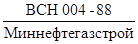 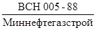
1.19. После завершения работ по строительству установки катодной защиты должна быть выполнена рекультивация земельного участка.
2. ПОДГОТОВИТЕЛЬНЫЕ РАБОТЫ К СТРОИТЕЛЬСТВУ И МОНТАЖУ СРЕДСТВ И УСТАНОВОК ЭЛЕКТРОХИМИЧЕСКОЙ ЗАЩИТЫ
Подготовка юридической и проектно-сметной документации и технических средств
2.1. К началу производства работ по строительству и монтажу средств и установок электрохимической защиты должны быть выполнены следующие основные подготовительные работы, обеспечивающие юридическое и техническое право на ведение строительно-монтажных работ по электрохимической защите трубопровода:
а) переданы заказчиком (или через генподрядчика) исполнителю подрядной организации в порядке и в сроки, установленные действующими «Методическими указаниями по вопросам взаимоотношений генподрядных и субподрядных организаций Миннефтегазстроя в новых условиях хозяйствования», «Правилами о договорах подряда на капитальное строительство» и «Положением о взаимоотношениях организаций - генеральных подрядчиков с субподрядными организациями», следующие материалы:
проектно-сметная документация (при этом на каждом экземпляре переданных рабочих чертежей должен быть штамп «в производство» с подписью заказчика);
документы о разрешении соответствующих органов (организаций) на производство работ в зоне воздушных линий электропередачи и связи, эксплуатируемых участков железных и автомобильных дорог, вблизи подземных сооружений с приложением схем их прохождения на строительной площадке;
документы об отводе земель под строительство и на снос строений, препятствующих строительству;
б) разработан и в установленном порядке утвержден проект производства работ в объеме, необходимом для их производства.
Кроме того, производителю работ необходимо:
а) подготовить инвентарные передвижные, складские, производственные и санитарно-бытовые средства, необходимые при производстве строительных и электромонтажных работ в полевых условиях;
б) принять от заказчика монтируемые материалы и оборудование в количестве и по номенклатуре, предусмотренным согласованными графиками;
в) выполнить технологическую часть трубопровода в объеме, необходимом для начала строительных и электромонтажных работ;
г) обеспечить бригаду необходимыми подъемно-транспортными средствами, строительными машинами, монтажными механизмами, инструментами и приспособлениями.
Входной контроль оборудования ЭХЗ
2.2. Перед отправкой оборудования в монтаж на трассу трубопровода исполнителем должен быть проведен входной контроль. При входном контроле должна быть установлена пригодность оборудования к монтажу и последующей эксплуатации путем установления исправности конструктивных элементов, электрических цепей, контактных соединений, измерительных приборов и т.п.
Поставка и приемка оборудования
2.3. Средства и установки электрохимической защиты должны быть поставлены на строительство комплектно в соответствии со спецификацией, указанной в проекте, и сопровождены документами, удостоверяющими соответствие указанных средств и установок их техническим условиям.
2.4. Средства и установки электрохимической защиты должны быть переданы в монтаж по заявкам монтажной организации в установленные сроки в соответствии с принятой последовательностью производства строительно-монтажных работ и оформлены актом приемки электрооборудования под монтаж.
2.5. При приемке средств и установок электрохимической защиты в монтаж их подвергают внешнему осмотру без разборки на узлы и детали, при этом проверяют:
соответствие проекту;
комплектность;
отсутствие повреждений и дефектов, сохранение окраски консервирующих и специальных покрытий, сохранность пломб;
наличие и полноту технической документации заводов-изготовителей, необходимой для производства монтажных работ.
Хранение средств и установок электрохимической защиты
2.6. Условия хранения средств и установок электрохимической защиты и кабельной продукции должны отвечать требованиям СНиП 3.01.01-85 «Организация строительного производства».
2.7. Хранение материалов, метизов, протекторов и анодных заземлителей в базовых условиях должно отвечать следующим требованиям:
а) металлические трубы, прокат, листовую сталь, протекторы и анодные заземлители необходимо хранить под навесами;
б) электроды для электродуговой сварки, а также метизы следует хранить в сухих отапливаемых помещениях в заводской упаковке.
Подготовительные работы в зоне строительства
2.8. Перед началом строительно-монтажных работ выполняют подготовительные работы. На площадках катодных станций и дренажей анодного заземления, соединительных линий кабелей проводят валку леса, расчистку рабочей зоны от деревьев и кустарника, корчевку и захоронение пней.
2.9. На обводненных и заторфованных участках площадки станций размером, предусмотренным проектом, срезают бульдозером моховой покров на глубину до 0,5 м и перемещают его в отвал на расстояние до 50 м с разравниванием. Аналогично удаляют верхний слой торфа. Вместо вынутого торфа устраивают насыпь из минеральных дренируемых грунтов, которые разрабатывают в ближайшем карьере экскаватором и доставляют на площадку самосвалом. Насыпь уплотняют, поверхность ее и откосы планируют и укрепляют посевом трав. Затем в центре площадки, где планируется разместить блочно-комплектную установку катодной защиты, устраивают песчано-гравийную подсыпку толщиной 10 см площадью, указанной в проекте.
При монтаже преобразователей УКЗ на сваях работы проводят в соответствии с проектом производства работ.
3. СТРОИТЕЛЬНО-МОНТАЖНЫЕ РАБОТЫ НА СРЕДСТВАХ И УСТАНОВКАХ ЭЛЕКТРОХИМИЧЕСКОЙ ЗАЩИТЫ
Установки катодной защиты
3.1. Подготовительные работы по сооружению катодной защиты должны быть выполнены в приведенной последовательности:
а) разметка участка производства работ;
б) выбор и обустройство места для хранения оборудования установки катодной защиты, монтаж их узлов, деталей, метизов, инструментов и материалов перед монтажом;
в) доставка на участок строительно-монтажных работ землеройной техники, строительных машин и механизмов;
г) подготовка участка для производства работ по устройству катодной защиты;
д) доставка на участок строительно-монтажных работ оборудования катодной защиты, монтажных узлов, деталей, метизов, инструмента, приспособлений и материалов.
3.2. Хранить оборудование катодной защиты, монтажные узлы, детали, инструменты, метизы и материалы на участке производства работ следует в одном месте, используя для защиты их от атмосферных осадков вагончики или крытые автоприцепы.
3.3. Для сооружения установки катодной защиты должны быть выполнены следующие строительно-монтажные работы:
а) разработка грунта под оборудование катодной защиты, воздушной или кабельной электролинии;
б) прокладка воздушных токопроводов или кабелей в грунте;
в) установка трансформаторной подстанции (столбового трансформаторного пункта СТП, комплектной трансформаторной подстанции КТП) при питании катодной защиты от линии электропередачи напряжением 6 - 10 кВ;
г) сооружение анодного заземления;
д) сооружение защитного заземления и грозозащиты;
е) монтаж источника тока катодной защиты (преобразователя) или блочно-комплектного высоковольтного устройства катодной защиты при питании от линии электропередачи напряжением 6 - 10 кВ;
ж) установка контрольно-измерительного пункта;
з) монтаж катодного вывода;
и) монтаж электрических цепей катодной установки, соединительных и электродренажных линий;
к) монтаж ограждающего устройства трансформаторной подстанции, блочно-комплектного высоковольтного устройства катодной защиты или преобразователя.
3.4. Монтаж источника тока катодной защиты (преобразователя, блочно-комплектного устройства катодной защиты низковольтного) включает:
а) установку в котлован трубы с кабелями для подключения катодной установки к линии электропитания, трубопроводу и анодному заземлению;
б) засыпку и уплотнение с помощью приводных трамбовок нижней части котлована по всей поверхности, включая поверхность для установки стоек фундамента;
в) сборку фундамента и установку его в котлован;
г) монтаж рамы или другой металлоконструкции к фундаменту для установки преобразователя;
д) крепление кабельных труб к раме преобразователя;
е) нанесение на раму и трубу защитного покрытия;
ж) монтаж преобразователя на раме;
з) устройство защитного заземления;
и) подключение преобразователя к питающей электросети.
Общий вид смонтированного низковольтного устройства катодной защиты представлен на рис. 1.
Рис. 1. Общий вид смонтированного устройства катодной защиты низковольтного УКЗН:
1 - блок катодных станций; 2 - салазки
3.5. Монтаж высоковольтного блочно-комплектного устройства катодной защиты включает:
а) установку в котлован труб с кабелями для подключения катодной установки к линии электроснабжения (при кабельном варианте), к трубопроводу и анодному заземлению;
б) укладку фундаментных плит;
в) крепление кабельных труб к каркасу блочно-комплектного устройства;
г) нанесение на кабельные трубы защитного покрытия;
д) установку и крепление блочно-комплектного устройства на фундаментной плите;
е) устройство защитного заземления;
ж) подключение блочно-комплектного устройства катодной защиты к питающей ЛЭП - 6 - 10 кВ (кабельный или воздушный ввод).
Общий вид смонтированного высоковольтного устройства катодной защиты представлен на рис. 2.
Рис. 2. Общий вид смонтированного устройства катодной защиты высоковольтного УКЗВ:
1 - блок высоковольтного трансформатора; 2 - блок катодных станций; 3 - салазки; 4 - изолятор проходной; 5 - сетка ограждения; 6 - кронштейн воздушного ввода; 7 - труба кабельного ввода
3.6. Общая глубина котлована под фундамент преобразователя должна соответствовать требованиям проекта.
3.7. Бетонные и металлические части фундамента и трубные вводы должны быть защищены от коррозии в соответствии с проектом.
3.8. При сооружении катодной установки в незакрепленных песках необходимо выполнить мероприятия по закреплению песков в соответствии с требованиями технорабочего проекта.
Воздушные и кабельные линии электропередачи
3.9. При
сооружении линий электропередачи следует руководствоваться «Правилами
устройства электроустановок» ПУЭ (М.: Энергоатомиздат, 1986)
и «Инструкцией по строительству вдольтрассовых ЛЭП 6 - 10 кВ магистральных
трубопроводов» 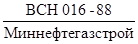
Заземляющие устройства и защитные заземления
3.10. При сооружении защитного заземления необходимо:
а) погрузить в грунт вертикальные или уложить на дно траншеи горизонтальные электроды-заземлители;
б) уложить в траншею магистральный проводник;
в) соединить магистральный проводник с электродами-заземлителями сваркой;
г) соединить магистральный проводник с заземляемой конструкцией;
д) изолировать места сварных соединений;
е) уплотнить и выровнять грунт над заземлением;
ж) покрасить надземную часть заземляющего проводника.
3.11. Электроды защитного заземления, как правило, следует изготовлять из стальных стержней, уголков или проката другого профиля в соответствии с техническим проектом и рабочими чертежами.
3.12. Запрещается использовать в качестве защитного заземления анодные заземления, а также устройство автономных (не соединенных проводниками) защитных и помехозащитных заземлителей для различных частей оборудования, доступных одновременному прикосновению.
3.13. Контактные соединения защитного заземления должны находиться от поверхности земли на расстоянии, указанном в техническом проекте и рабочих чертежах, но не менее 0,6 м.
3.14. Расположенные в земле заземлители и заземляющие проводники не должны иметь окраски и изолирующих покрытий.
3.15. Соединение элементов заземления одного с другим, а также соединение заземлителей с заземляющими проводниками следует выполнять сваркой, при этом длина нахлеста должна быть равна шести диаметрам при круглом сечении и двойной ширине при прямоугольном сечении заземлителя.
3.16. Вертикальные электроды заземления необходимо погружать в грунт механизированно вращательным или вибрационным способом.
3.17. Присоединение заземляющих проводников к заземляемым конструкциям должно быть выполнено сваркой, а к корпусам устройств катодной и электродренажной защиты - сваркой их надежным болтовым соединением с применением мер, предусматривающих ослабление контактов.
3.18. Сварные швы, расположенные в земле, должны быть изолированы.
3.19. Надземную часть заземляющих проводников следует окрашивать в черный цвет.
Трансформаторные подстанции
3.20. При сооружении трансформаторных подстанций катодной защиты следует руководствоваться «Правилами устройства электроустановок ПУЭ». Для питания катодной защиты применяют столбовые трансформаторные пункты СТП напряжением 6-10/0,22 кВ, мощностью 5 - 10 кВ×А и комплектные трансформаторные подстанции (КТП) напряжением 6 - 10/0,4 кВ, мощностью 25 кВ×А,
3.21. Столбовой трансформаторный пункт СТП-6-10/0,22 кВ, 5 - 10 кВ×А необходимо сооружать в приведенной последовательности:
а) разработка грунта в соответствии с технорабочим проектом;
б) сборка анкерной концевой опоры;
в) установка анкерной концевой опоры;
г) монтаж однофазного трансформатора;
д) монтаж высоковольтного оборудования (разъединителя с приводом, предохранителей, разрядников, изоляторов);
е) установка преобразователя;
ж) монтаж соединительных электролиний;
з) установка заземляющих устройств и защитного заземления;
и) устройство ограждения;
к) установка предупредительных плакатов;
л) подключение СТП к ЛЭП 6 - 10 кВ.
3.22. Комплектную трансформаторную подстанцию КТП 6-10/0,4 кВ, 25 кВ×А необходимо сооружать в приведенной последовательности:
а) установка КТП;
б) установка преобразователя;
в) монтаж соединительных электролиний;
г) установка заземляющих устройств и защитного заземления;
д) устройство ограждения;
е) установка предупредительных плакатов;
ж) подключение КТП к ЛЭП 6 - 10 кВ.
3.23. Перед установкой трансформатора масляный бак следует проверить на герметичность под избыточным давлением и отобрать пробу масла для испытания.
3.24. Пробу масла для испытания необходимо отбирать в сухие, чистые стеклянные банки с притертыми пробками из специальных кранов в нижней части бака при температуре масла не ниже 5 °С. Масло высоковольтных трансформаторов СКЗ берут только в сухую погоду. Для сокращенного химического анализа отбирают 1,5 л масла, а для испытания на пробой 0,75 л.
3.25. При сокращенном химическом анализе определяют содержание воды и механических примесей, кислотное число и реакцию водной вытяжки.
3.26. Пробивное напряжение масла в стандартном разряднике маслопробойника при напряжении обмотки высшего напряжения трансформатора до 15 кВ включительно должно быть не ниже 25 кВ.
3.27. После установки разъединителя и привода следует проверить все болтовые соединения и прочность крепления, затем соединить вал разъединителя с приводом в соответствии с монтажным чертежом.
3.28. Верхнее положение рукоятки привода должно соответствовать включенному состоянию разъединителя. При регулировке и подгонке контактов следует добиться легкости и одновременности попадания ножей всех полюсов многополюсного разъединителя, устранить перекосы путем смещения изоляторов неподвижных контактов, поворотов изоляторов вокруг своей оси, применения подкладок под фланец изолятора и др.
3.29. Плотность прилегания разъемных контактов считается нормальной, если щуп толщиной 0,05 мм и шириной 10 мм не входит в контактное соединение глубже, чем на 2/3 соответственной ширины.
3.30. Соединение токоведущих проводов с контактными пластинами разъединителя должно быть надежным, исключающим нагрев контактов. Гайки контактных соединений должны фиксироваться контргайками или стопорными шайбами.
3.31. Предохранители монтируют в вертикальном положении на брусьях, соблюдая расстояние, указанное в проекте.
3.32. Разрядники всех типов должны быть установлены так, чтобы можно было проверить состояние разрядника, внешнего промежутка и положение указателя срабатывания с земли.
3.33. По окончании монтажа оборудования на СТП следует установить ограждение из металлической сетки, закрепленной на железобетонных столбах. Дверцы ограждения и привод разъединителя должны быть заперты на висячий замок с толщиной дужки не менее 10 мм.
3.34. На железобетонной опоре СТП, опорах ЛЭП напряжением 6 - 10 кВ, шкафу катодной станции и ограждении должны быть прикреплены предупредительные плакаты установленного образца.
Анодные заземления
3.35. Подготовительные работы по сооружению анодных заземлений должны быть выполнены в соответствии с п. 3.1 настоящих ВСН.
3.36. Погрузку, транспортировку и разгрузку анодных заземлителей на месте производства работ необходимо производить механизированным способом без ударов и сотрясений.
Поверхностные анодные заземления
3.37. Сооружение анодного заземления из вертикальных неупакованных стальных, железокремниевых, графитовых и графито-пластовых электродов (заземлителей) должно включать следующие операции:
а) бурение скважин на проектную глубину;
б) установку электродов-заземлителей в скважины;
в) прокладку магистрального кабеля на дне траншеи;
г) выполнение электрического контакта между электродами-заземлителями и магистральным кабелем;
д) присоединение магистрального кабеля к выводу на опору воздушной электролинии или к кабельной электролинии;
е) изоляцию мест контактных соединений и заливку битумной мастикой кабелей.
3.38. При сооружении анодного заземления из горизонтально уложенных неупакованных электродов-заземлителей необходимо выполнить следующие операции:
а) засыпку траншеи слоем коксовой мелочи или графита до проектной высоты, но не менее 100 мм с уплотнением приводными трамбовками;
б) укладку электродов-заземлителей в траншею горизонтально;
в) засыпку электродов-заземлителей слоем коксовой мелочи или графита до проектной высоты, но не менее 100 мм;
г) засыпку траншеи слоем грунта толщиной 0,5 м с уплотнителем приводными трамбовками, при этом провода электродов-заземлителей должны быть закреплены в вертикальном положении;
д) прокладку в траншею магистрального кабеля;
е) присоединение проводов электродов-заземлителей к магистральному кабелю;
ж) соединение магистрального кабеля с выводом на опору воздушной электролинии или с кабельной электролинией;
з) изоляцию мест контактных соединений и заливку проводов и кабелей битумной мастикой;
и) окончательную засыпку траншеи грунтом с уплотнением приводными трамбовками.
3.39. Сооружение анодного заземления с горизонтальными комплектными заземлителями, упакованными с коксовой мелочью (рис. 3), должно включать следующие операции:
а) отбраковку анодных заземлителей по наличию коксовой засыпки;
б) укладку в траншею заземлителей горизонтально;
в) прокладку на дне траншеи магистрального кабеля;
г) подсоединение заземлителей к магистральному кабелю;
Рис. 3. Заземлитель анодный АК-3:
1 - электрод железокремниевый; 2 - стержень стальной; 3 - крышка верхняя; 4 - кабель; 5 - крышка нижняя; 6 - труба; 7 - крышка; 8 - шайба; 9 - корпус; 10 - отверстие строповочное, 11 -мелочь коксовая с ингибитором; 12 - смола эпоксидная; 13 - шильдик
д) подсоединение магистрального кабеля к выводу на опору воздушной электролинии или к кабельной электролинии;
е) изоляцию контактных соединений и заливку битумной мастикой кабеля.
3.40. Заземлители следует устанавливать в скважину или траншею механизированным способом, избегая ударов и сотрясений. Не допускается использовать токоввод анодного заземлителя при его перемещениях и спуско-подъемах.
3.41. В сухих и маловлажных грунтах заземлители (после контроля качества изоляции контактных соединений) необходимо залить глинистым раствором из расчета 0,04 м3 на каждый заземлитель.
Протяженное анодное заземление
3.42. При сооружении протяженного анодного заземления из электропроводных эластомеров следует выполнить работы в такой последовательности:
а) рытье траншеи заданной глубины и протяженности;
б) раскатка заземлителя;
в) укладка заземлителя в траншею;
г) засыпка траншеи грунтом с уплотнением приводными трамбовками, а также работы, указанные в пп. 3.38, ж; 3.93, з.
Глубинное анодное заземление
3.43. Монтаж глубинного анодного заземления и установку его в скважину, проработанную глинистым раствором, следует выполнять сразу после окончания бурения.
3.44. Глубинные заземления в скважину следует устанавливать в минимально короткий срок. Перерывы в процессе монтажа и установки не допускаются.
3.45. Монтаж глубинного анодного заземления следует вести секциями (блоками), используя монтажный стол.
3.46. Перед пуском заземлителей в скважину необходимо проверить качество изоляции искровым дефектоскопом напряжением 20 кВ.
3.47. После установки анодного заземления скважину необходимо заполнить глинистым раствором или коксом, а верхнюю часть - гравием или песком в соответствии с техническим проектом и рабочими чертежами.
3.48. Монтаж и установку анодного заземления из графито-пластовых электродов следует выполнять в соответствии с проектом производства работ.
Свайное анодное заземление
3.49. Свайное заземление, как правило, следует изготавливать из некондиционных отходов труб диаметрами 89 - 320 мм, длиной до 15 м. Конструкция и конкретные геометрические размеры каждой сваи определяются техническим проектом и рабочими чертежами.
3.50. При сооружении свайного анодного заземления необходимо выполнять следующие работы:
а) подготовку свай;
б) бурение скважин;
в) погружение свай в скважины;
г) солевую обработку свай в скважине;
д) электрическое соединение свай;
е) подключение к заземлителю кабеля;
ж) обработку оголовков свай.
3.51. При подготовке свай и установке их необходимо:
нижнему концу сваи придать конусообразную форму;
приварить к оголовку сваи фланец с крышкой на болтовом соединении;
выполнить перфорацию стенок по длине сваи.
3.52. Погружение свай в скважину следует выполнять вибровдавливанием, используя паровоздушный молот или другое аналогичное оборудование. Оголовок сваи должен выступать над поверхностью грунта на проектную высоту.
3.53. Токоведущий кабель должен быть приварен или подсоединен болтовым соединением к стальной соединительной полосе около оголовка центральной сваи.
3.54. При обработке оголовка сваи должны быть выполнены следующие основные работы:
а) торцы свай накрыты крышками, привернутыми болтами с гайками к фланцам на оголовках;
б) стальная соединительная полоса и оголовки свай на высоте не менее 0,3 м надежно изолированы от грунта;
в) оголовки свай обвалованы грунтом на высоту не более 0,3 м.
Установка электродренажной защиты
3.55. Подготовительные работы по сооружение электродренажной защиты должны соответствовать п. 1.9.
3.56. Для сооружения установки электродренажной защиты должны быть выполнены следующие строительно-монтажные работы:
а) прокладка кабелей в грунте или воздушной электролинии при сооружении электродренажной установки с усиленным электродренажом;
б) сооружение защитного заземления;
в) установка контрольно-измерительного пункта и кабельной стойки;
г) монтаж электродренажного устройства;
д) монтаж катодного вывода;
е) монтаж электрических цепей электродренажной установки и устройств грозозащиты;
ж) монтаж ограждения электродренажного устройства.
3.57. Для сооружения электродренажной установки с усиленным электродренажом должны быть выполнены следующие строительно-монтажные работы:
а) устанавливают трубу с кабелями в котлован для подключения к электродренажному устройству;
б) засыпают грунтом котлован, уплотняют нижнюю часть котлована по всей поверхности, включая поверхности для установки фундамента;
в) устанавливают бетонный фундамент;
г) осуществляют монтаж рамы или другой металлоконструкции на фундамент для установки дренажного устройства;
д) наносят на раму противокоррозионное покрытие;
е) осуществляют монтаж электродренажного устройства на раме.
3.58. Подключение электродренажной установки к рельсовой сети железной дороги должно быть осуществлено через устройство, предусмотренное техническим проектом и рабочими чертежами.
3.59. Соединительные кабели необходимо подвести к электродренажному устройству через трубу и подключить к его винам зажимами.
3.60. Дренажный кабель следует подключать к трубопроводу через стальную пластину неразъемным соединением, для чего:
а) дренажный кабель приваривают к пластине или соединяют с ней методом опрессования;
б) пластину изготавливают из той же стали, что и трубопровод;
в) пластину приваривают к кольцевому (монтажному) или продольному сварочному шву трубопровода;
г) место соединения кабеля с трубопроводом изолируют.
3.61. Подсоединение кабеля к рельсовой сети железной дороги и от трубопровода к электродренажному устройству необходимо выполнять на завершающей стадии строительно-монтажных работ.
3.62. Подключать дренажный кабель к рельсовой сети следует в присутствии представителя службы эксплуатации железной дороги.
3.63. Наземные токопроводящие кабели должны быть защищены от механических повреждений.
Протекторные установки
3.64. Упакованные протекторы следует доставлять к месту проведения работ в заводской упаковке в крытых машинах.
3.65. При транспортировке, погрузке, разгрузке и установке упакованных протекторов необходимо принять меры предосторожности, чтобы исключить возможность толчков и ударов, которые могут привести к повреждениям протектора. Не допускается сбрасывать протекторы с транспортных средств на землю или в траншею и скважину.
3.66. Хранить протекторы, монтажные узлы, детали, метизы, инструмент, приспособления и материалы на участке производства работ следует в одном месте, обеспечив защиту от атмосферных осадков.
3.67. Разгрузку протекторов и их установку в проектное положение необходимо выполнять подъемно-транспортным механизмом.
3.68. Разработку грунта под устройства протекторной защиты и засыпку их по завершении монтажа оборудования следует осуществлять землеройной техникой.
3.69. Протекторы должны быть установлены в траншею или в скважины, размеры и расположение которых должны соответствовать техническому проекту и рабочим чертежам.
3.70. Перед установкой упакованные протекторы необходимо освободить от бумажных мешков.
3.71. При горизонтальной установке протекторов должны быть выполнены следующие строительно-монтажные работы:
а) укладка протекторов в траншею;
б) укладка в траншею магистрального кабеля;
в) соединение проводников протектора с магистральным кабелем;
г) подключение соединительного кабеля к трубопроводу;
д) изоляция мест соединений проводников протекторов с магистральным кабелем и магистрального кабеля с трубопроводом;
е) установка контрольно-измерительного пункта и подсоединение к нему кабелей;
ж) заливка кабелей битумной мастикой;
з) заливка протекторов водой из расчета 0,05 м3 на каждый протектор.
3.72. При вертикальной установке протекторов необходимо выполнить следующие строительно-монтажные работы:
а) разработать траншею для укладки кабелей;
б) пробурить скважины под установку протекторов;
в) установить протекторы в скважинах с центровкой и фиксацией их грунтом;
г) уложить в траншеи магистральный кабель;
д) подсоединить проводники от протекторов к магистральному кабелю;
е) подключить магистральный кабель к трубопроводу;
ж) изолировать места соединений;
з) проверить качество изоляции мест соединений искровым дефектоскопом напряжением 20 кВ;
и) установить контрольно-измерительный пункт с подсоединением к нему кабеля;
к) залить кабели битумной мастикой;
л) залить полностью скважины жидким глинистым раствором.
3.73. Диаметр скважины должен обеспечивать свободное опускание в нее протектора и послойное трамбование грунта при засыпке.
3.74. При монтаже автоматических протекторных установок (с горизонтальными и вертикальными протекторами) следует дополнительно установить коробки с диодно-транзисторными блоками и вспомогательные электроды.
Протяженные протекторы
3.75. Подготовительные работы по сооружению протекторной защиты, осуществляемой с помощью протяженных протекторов, укладываемых в общую траншею с трубопроводом в процессе его строительства, следует выполнять в приведенной последовательности:
а) разметка участка производства работ и согласование с технологией строительства трубопровода;
б) подготовка участка для устройства протекторной защиты;
в) доставка на участок строительно-монтажных работ барабанов с протекторами, монтажных узлов, деталей, метизов, инструмента, приспособлений и материалов.
3.76. Погрузку и выгрузку барабанов с протяженными протекторами на участке производства работ следует вести подъемно-транспортными механизмами.
3.77. Непрерывную прокладку протяженного протектора осуществляют одновременно с прокладкой трубопровода трубоукладчиком, на стреле которого помещают барабан с протектором.
3.78. При совмещенной установке протяженных протекторов в общую траншею с трубопроводом должны быть выполнены следующие строительно-монтажные работы:
а) укладка протектора в траншею трубопровода;
б) соединение строительных длин протектора между собой (если длина протекторного участка превышает строительную длину протектора);
в) соединение проводников с протектором и трубопроводом;
г) изоляция мест соединений проводников с протектором и трубопроводом;
д) установка контрольно-измерительных пунктов и подсоединение к ним кабелей;
е) заливка кабелей битумной мастикой.
3.79. При установке протяженных протекторов в отдельную траншею параллельно трубопроводу, оснащенному кабелем технологической связи, укладку протектора следует вести со стороны, противоположной кабелю связи.
3.80. Подготовительные работы по сооружению протекторной защиты протяженными протекторами, укладываемыми в отдельную траншею, выполняют в такой последовательности:
а) разметка участка производства работ;
б) выбор места для хранения барабанов с протекторами, монтажных узлов, деталей, метизов, инструментов, приспособлений и материалов перед монтажом;
в) доставка к месту работ землеройной техники, строительных машин и механизмов;
г) подготовка участка для устройства прожекторной защиты;
д) доставка к месту работ барабанов с протекторами, монтажных узлов, деталей, метизов, инструмента, приспособлений и материалов.
3.81. Прокладка протяженного протектора по самостоятельной трассе осуществляется с рытьем траншеи экскаватором или бестраншейным способом с помощью кабелеукладчика.
3.82. При прокладке протектора должны быть выполнены следующие операции:
а) рытье траншеи;
б) раскатка протектора кабельной тележкой;
в) укладка протектора в траншею;
г) засыпка траншеи, а также работы в соответствии с пп. 3.78, б - 3.78, е.
3.83. Подготовительные работы по сооружению протекторной защиты протяженными протекторами бестраншейным способом следующие:
разбивка, планировка и предварительная пропорка трассы, а также работы в соответствии с пп. 3.80, б - 3.80, д.
3.84. При бестраншейном способе прокладки протяженного протектора должны быть выполнены следующие работы:
а) разработка щели в грунте ножом кабелеукладчика с укладкой протектора;
б) контроль глубины укладки протектора с помощью мерной планки.
Контрольно-измерительные пункты
3.85. До установки контрольно-измерительного пункта на его подземную часть необходимо нанести антикоррозионное покрытие, а надземную часть окрасить в соответствии с проектом.
3.86. При строительстве и монтаже контрольно-измерительных пунктов должны быть выполнены работы в такой последовательности:
а) отрыть котлован для установки пункта;
б) отрыть крышку пункта;
в) протянуть кабели или провода в полость стойки пункта, предусмотрев их резерв длиной 0,4 м;
г) установить неполяризующийся медно-сульфатный электрод длительного действия;
д) присоединить измерительный контрольный кабель (провода) к защищаемому трубопроводу;
е) установить стойку в котлован вертикально;
ж) выполнить подсоединения кабелей или проводов к клеммам клеммной панели;
з) выполнить маркировку кабелей (проводов) и клемм, соответствующую схеме соединений;
и) навести на верхнюю часть стойки масляной краской порядковый номер пункта по трассе трубопровода;
к) закрепить грунт вокруг пункта в радиусе 1 м смесью песка со щебнем фракцией до 30 мм.
Изолирующие фланцы.
Назначение и условия применения
3.87. Изолирующие стальные фланцы, приваренные встык, предназначены для повышения эффективности электрохимической защиты магистральных и промысловых трубопроводов. Необходимость их установки определяется проектом.
3.88. Изолирующие фланцы применяют для:
электрического разъединения трубопроводов - отводов от основной магистрали;
увеличения продольного омического сопротивления трубопровода;
электрического разъединения изолированного трубопровода от неизолированных заземленных сооружений (газоперекачивающие, нефтеперекачивающие, водонасосные станции, промысловые коммуникации, трубопроводы, артскважины, резервуары и др.);
электрического разъединения трубопроводов, изготовленных из различных металлов;
электрического отсоединения трубопроводов от подземных сооружений предприятий, на которых защита не предусматривается или запрещена ввиду взрывоопасности.
Изготовление изолирующих фланцев
3.89. Изготовление, сборку и испытание изолирующих фланцев производят в базовых (заводских) условиях.
3.90. Материал прокладки изолирующих втулок и шайб должен удовлетворять условиям герметичности фланцевого соединения при рабочих параметрах трубопровода (давлении, температуре).
3.91. Сборка изолирующих фланцев производится в приведенной последовательности:
а) перед сборкой уплотнительные поверхности фланцев покрывают изолирующим лаком;
б) во избежание перекоса фланцы соединяют путем последовательной затяжки диаметрально противоположных шпилек;
в) после сборки торцы изолирующих прокладок и шайб, а также внутреннюю поверхность труб и фланцев покрывают изолирующим лаком, а фланцы сушат при температуре до 200 °С.
Испытания изолирующих фланцев
3.92. Испытания изолирующих фланцев производят после сушки.
3.93. При электрических испытаниях правильно собранные изолирующие фланцы, проверяемые в сухом помещении мегомметром при напряжении 1000 В, не должны показывать короткого замыкания.
3.94. Гидравлические испытания на прочность и плотность соединения производят путем опрессовки водой на специальном стенде. Целесообразно одновременно испытывать серию фланцев.
3.95. Испытательное давление Рисп выбирают в зависимости от максимального давления в трубопроводе Рмакс по формуле
3.96. Опрессовка производится гидравлическим ручным насосом.
3.97. На электрические и гидравлические испытания составляют акт. Испытанные трубы с фланцами разрезают, осматривают и перевозят на трассу к месту врезки.
3.98. Врезку изолирующих фланцев на строящемся подземном трубопроводе осуществляют следующим образом:
а) отключают ближайшие установки электрохимической защиты;
б) перед вырезкой катушки к образующимся в результате вырезки катушки концам трубопровода приваривают электрическую изолированную перемычку сечением по меди не менее 25 мм2;
в) после вырезки катушки подгоняют и вваривают катушку с фланцами;
г) для проведения электрических измерений оборудуют контрольно-измерительный пункт в соответствии с п. 3.4 настоящих ВСН;
д) участок трубопровода, примыкающий к фланцам, покрывают изоляцией усиленного типа.
3.99. Врезка изолирующих фланцев на действующих трубопроводах производится после осуществления мероприятий по обеспечению безопасности в соответствии с действующими правилами и инструкциями.
КОНТАКТНЫЕ СОЕДИНЕНИЯ СРЕДСТВ И УСТАНОВОК ЭЛЕКТРОХИМИЧЕСКОЙ ЗАЩИТЫ
Контактное соединение при монтаже воздушных токопроводов
Соединение проводов овальными соединителями
3.100. Соединение проводов овальными соединителями (табл. 1), как правило, проводят методом скрутки с помощью приспособлений типа МИ-189А (рис. 4) и МИ-250А (рис. 5).
Рис. 4. Приспособление типа МИ-189А для соединения проводов в овальных соединителях методом скрутки
Рис. 5. Приспособление типа МИ-230А для соединения проводов в овальных соединителях методом скрутки
3.101. Подготовка к монтажу проводов в овальном соединителе методом скрутки производится в такой последовательности:
а) очистка от грязи и защитной смазки овального соединителя и соединяемых участков проводов и промывка их бензином;
б) нанесение на поверхности соединяемых участков проводов нейтрального вазелина;
в) удаление под слоем вазелина оксидной пленки металлической щеткой.
3.102. Подготовленные провода следует ввести в овальный соединитель внахлестку с двух сторон так, чтобы концы их выступали из соединителя на 20 - 40 мм.
3.103. Скручивание проводов в овальном соединителе приспособлениями МИ-189А или МИ-250А необходимо выполнять в приведенной последовательности:
Овальные соединители и приспособления
|
Марка соединителя |
Тип приспособления |
|
|
АС-10 |
СОАС-10-2А |
МИ-189А |
|
АС-15 |
СОАС-16-2А |
МИ-189А |
|
А-16 |
СОАС-16-2А |
МИ-189А |
|
АС-25 |
СОАС-16-2А |
МИ-189А |
|
А-25 |
СОАС-25-2А |
МИ-189А |
|
АС-35 |
СОАС-35-2А |
МИ-189А |
|
АС-50 |
СОАС-35-2А |
МИ-189А |
|
А-50 |
СОАС-50-2А |
МИ-189А |
|
АС-70 |
СОАС-50-2А |
МИ-189А |
|
А-70 |
СОАС-70-2А |
МИ-230А |
|
АС-95 |
СОАС-70-2А |
МИ-230А |
|
А-95 |
СОАС-95-2А |
МИ-230А |
а) ослабляют гайки откидных болтов (рис. 6) или отвинчивают гайку 1 (рис. 7);
б) поднимают верхние откидные плашки 2 (см. рис. 6) или снимают траверсы 2 (см. рис. 7);
Рис. 6. Зажимные узлы приспособления МИ-189А:
а - поворотная часть; б - ползушка; 1 - гайка откидного болта; 2 - верхняя откидная плашка; 3 - нижняя плашка; 4 - рычаг
Рис. 7. Зажимные узлы приспособления МИ-230А:
а - детали; б - зажимной узел в сборе; 1 - гайка, 2 - траверса; 3 - матрица; 4 - рычаг; 5 - дополнительный рычаг
в) устанавливают соединитель с введенными в него проводами в прорезь поворотной части приспособления, разворачивают на 90° и накладывая плоской стороной на ползушку и плашку 3 (см. рис. 6) или матрицы 3 (см. рис. 7);
г) устанавливают и закрепляют верхние откидные плашки 2 (см. рис. 6) или траверсы 2 (см. рис. 7);
д) вставляют рычаг (вороток) 4 (см. рис. 6), 4 и 5 (см. рис. 7) в отверстие поворотной части и соединитель скручивают в любую сторону на 4 - 4,5 оборота;
е) освобождают от плашек или матриц выполненное соединение и вынимают его из приспособлений через прорезь в поворотной части. Выполненное соединение приведено на рис. 8.
Рис. 8. Соединение проводов в овальном соединителе
Соединение алюминиевых и сталеалюминевых проводов термитно-муфельной сваркой
3.104. Алюминиевые и сталеалюминевые провода воздушных токопроводов в шлейфах, как правило, следует соединять методом термитно-муфельной сварки со сдавливанием жил (с осадкой) термитными патронами (рис. 9) с применением сварочных клещей (рис. 10).
Рис. 9. Термитный патрон марки АС для сварки жил проводов и кабелей:
1 - термитный патрон; 2 - кокиль; 3 - алюминиевый вкладыш
Рис. 10. Сварочные клещи типа АТСП-50-185:
1 - защитный кожух, 2 - зажимное устройство; 3 - концы соединительных проводов, 4 - термитный патрон; 5 - крючок; 6 - рама пружины
3.105. Сварные контактные соединения при монтаже воздушных токопроводов выполняют в такой последовательности:
а) провода выправляют, отторцовывают и зачищают стальной щеткой из кардоленты;
б) подготовленные к сварке провода вставляют в кокиль термитного патрона и устанавливают в зажим сварочных клещей;
в) муфель термитного патрона зажигают термитной спичкой, и одновременно закрывают защитный кожух на сварочных клещах;
г) через 1 - 2 мин после зажигания термитного патрона клещи сжимают;
д) после того как сварка окончена (муфель термитного патрона потемнеет), удаляют со сварного соединения клещи, муфель термитного патрона и кокиль.
В процессе сварки сварочные клещи с установленными проводами должны находиться в горизонтальном положении.
Контактные соединения при монтаже анодных заземлений и протекторных установок
3.106. Выводы анодных заземлителей (протекторов), как правило, следует присоединять к магистральному кабелю термитно-муфельной сваркой (введением присадки в кокиль термитного патрона).
3.107. Термитно-муфельная сварка контактных соединений должна быть выполнена в приведенной последовательности:
а) с конца провода анодного заземлителя или протектора удаляют изоляцию на участке длиной 50 мм;
б) оголенный участок жилы облуживают оловянно-свинцовым припоем;
в) с жилы магистрального кабеля снимают изоляцию на участке длиной 50 мм;
г) оголенный участок жилы перегибают посередине, складывают вместе и скругляют плоскогубцами;
д) на оголенный участок жил кабеля накладывают бандажи из шнурового асбеста с учетом диаметра кокиля выбранного термитного патрона;
е) жилы кабеля с бандажом вставляют в кокиль термитного патрона (рис. 11);
Рис. 11. Подготовленные к сварке хилы кабеля с термитным патроном марки АС
ж) для сохранения изоляции кабеля при сварке на оголенный участок жил устанавливают охладитель (рис. 12) из набора для термитной муфельной сварки (рис. 13);
з) муфель термитного патрона зажигают термитной спичкой, одновременно с началом горения термитного патрона в его кокиль вводят присадочный пруток из алюминиевой проволоки до полного заполнения кокиля расплавленным алюминием;
и) после сгорания термитного патрона жилу провода вывода анодного заземлителя вставляют в кокиль термитного патрона с расплавленным алюминием (см. рис. 12);
к) после окончания сварки охладитель снимают, а муфель термитного патрона и кокиль удаляют со сварного соединения. Сварное соединение приведено на рис. 14;
Рис. 12. Патрон марки АС с охладителем, установленный для сварки ответвленного провода
Рис. 13. Набор НТС-1 для термитно-муфельной сварки проводов и кабелей
л) на оголенный участок жил кабеля и сварного соединения наносят перхлорвиниловый лак, а затем трехслойную намотку поливинилхлоридной лентой с 50 %-ным перекрытием;
Рис. 14. Образец контактного соединения проводов марки ПСРП с алюминиевыми жилами кабеля
м) на изолированный участок сварного соединения надевают колпачок из поливинилхлоридной трубки диаметром 28 мм и длиной 140 мм, заваренный с одной стороны, колпачок предварительно заполняют перхлорвиниловым лаком и, обматывая лентой места выхода жил кабеля и провода, уплотняют его. Чтобы колпачок не спадал, его прикрепляют лентой ПХВ к изоляции кабеля (рис. 15).
Рис. 15. Изолированный участок сварного соединения
Контактные соединения алюминиевых кабелей с трубопроводом
3.108. Для присоединения алюминиевых кабелей к трубопроводу сваркой необходимо жилу оконцевать Г-образным стальным стержнем, облуженным на участке длиной 50 мм оловянно-свинцовым припоем.
3.109. Жилы кабеля со стальным стержнем должны быть соединены следующим образом:
а) с конца жилы кабеля удаляют изоляцию на участке длиной 50 мм;
б) на оголенный участок жилы накладывают бандаж из шнурового асбеста;
в) оголенную жилу кабеля с бандажом вставляют в кокиль термитного патрона;
г) на оголенный участок жилы устанавливают охладитель (рис. 16);
Рис. 16. Патрон марки АС с охладителем, установленный для сварки алюминиевой жилы кабеля со стальным стержнем
д) термитный патрон поджигают термитной спичкой, одновременно с началом горения термитного патрона в кокиль вводят присадочный пруток из алюминиевой проволоки (рис. 17) до полного заполнения расплавленным алюминием;
е) после сгорания термитного патрона облуженный конец стального стержня вставляют в кокиль патрона с расплавленным алюминием (рис. 18);
ж) после окончания сварки охладитель снимают, муфель термитного патрона и кокиль удаляют со сварного соединения. Сварные соединения приведены на рис. 19.
Рис. 17. Введение присадочного прутка из алюминиевой проволоки в кокиль термитного патрона марки АС при сварке алюминиевой жилы кабеля со стальным стержнем
3.110. Для присоединения кабеля с алюминиевой жилой к трубопроводу необходимо выполнить следующие работы:
а) снять изоляцию с верхней части трубопровода и зачистить оголенную часть до металлического блеска, смыв остатки изоляции бензином;
Рис. 18. Введение стального стержня в кокиль термитного патрона с расплавленным алюминием
б) приварить кабель со стальным Г-образным стержнем к трубопроводу в соответствии со СНиП III-42-80 «Правила производства и приемки работ. Магистральные трубопроводы».
Рис. 19. Образцы контактных соединений стальных стержней с алюминиевыми жилами кабеля:
а - с разрезом сварного соединения; б - без разреза сварного соединения
3.111. Сварное соединение изолируют в приведенной последовательности:
а) узел присоединения кабеля с Г-образным стальным стержнем изолируют полихлорвиниловой лентой;
б) на место соединения устанавливают временную форму из рубероида или толя;
в) изолированное сварное соединение приведено на рис. 20 (размеры даны в миллиметрах).
Рис. 20. Изолированное сварное соединение:
1 - трубопровод; 2 - изоляция трубопровода; 3 - Г-образный стальной стержень; 4 - сварные соединения; 5 - кабель; 6 - битумно-резиновая мастика; 7 - изоляционная лента
Катодные и дренажные выводы от труб из сталей с нормативным временным сопротивлением разрыву более 539 МПа (55 кгс/см)
3.112. Катодные и дренажные выводы следует приваривать к трубам электродами фтористокальциевого типа Э42А-Ф (ГОСТ 9467-75) диаметром 3 мм при силе тока не более 120 А.
3.113. Участки длиной не менее 50 мм должны быть приварены непрерывным угловым швом с двух сторон.
3.114. Катет углового шва должен быть равен диаметру привариваемой части катодного вывода.
3.115. Сварочную дугу следует возбуждать со шва, на котором выполнена приварка вывода.
3.116. Шов должен иметь плавные переходы к продольному или монтажному шву трубы.
3.117. Видимые дефекты на поверхности шва не допускаются, шов не должен выходить за пределы продольного, заводского или кольцевого монтажного стыка.
3.118. При обнаружении видимых дефектов место дефекта должно быть удалено абразивным инструментом, выплавка электродом не допускается.
Контактные соединения газовой сваркой при монтаже электродренажных установок
3.119. Для оконцевания жил кабеля сечением 300 - 600 мм2, как правило, применяют пропано-кислородную сварку.
3.120. Контактной поверхностью наконечника служит шина сечением 100´10 мм2.
3.121. Для выполнения сварочных работ необходимы следующие приспособления:
а) двухрожковая пропано-кислородная горелка из набора НГО (набор для сварки гибкой ошиновки), рис. 21;
б) зажимное устройство полуформ (рис. 22);
в) охладитель со сменными вкладышами (рис. 23).
Рис. 21. Двухрожковая пропано-кислородная горелка
3.122. Пропано-кислородную сварку следует выполнять в приведенной последовательности:
а) с конца жилы удаляют изоляцию на половину длины типоразмера сварочной формы с учетом толщины охладителя;
б) подготовленный к сварке участок жилы кабеля и контактную пластину зачищают щеткой из кардоленты;
в) в охладитель устанавливают и закрепляют вкладыш соответственно сечению жилы кабеля;
г) конец свариваемой жилы устанавливают в сварочные полуформы, которые закрепляют зажимным устройством;
д) вплотную к срезу изоляции устанавливают охладитель;
е) между охладителем и формой ставят асбестовый экран;
ж) рабочее давление для пропан-бутана устанавливают от 1,4 до 1,5 кгс/см2; для кислорода - от 4,5 до 5 кгс/см2;
з) формы разогревают, направляя пламя боковых горелок на стенки сварочной формы. Пламя горелок должно равномерно разогревать стенки формы в зоне сварочной ванны, не задерживаясь на одном месте;
и) через 30 - 40 с после нагрева формы до красного цвета в литниковое отверстие вводят присадку, а после заполнения ее жидким алюминием - контактную пластину (рис. 24);
Рис. 22. Сварочные полуформы:
а - сварочные полуформы в разобранном виде; б - сварочные полуформы в собранном виде; в - зажимные устройства полуформы
Рис. 23. Охладитель со сменными вкладышами:
а - охладитель; б - сменные вкладыши
Рис. 24. Контактная пластина введения в литниковое отверстие формы
к) нагрев формы прекращают, после затвердения расплава алюминия полуформы разбирают и снимают защитный (асбестовый) экран и охладитель;
л) оконцованную контактной пластиной жилу кабеля, остывшую до температуры окружающей среды, зачищают щеткой из кардоленты и протирают ветошью, смоченной в бензине. Оконцованная контактной пластиной жила кабеля приведена на рис. 25.
Рис. 25. Оконцованный алюминиевый кабель с применением полуформ, изготовленных на базе набора НТО:
1 - кабель, 2 - контактная пластина
Соединение и оконцевание кабелей опрессовкой
3.123. В основу опрессовки положен принцип местного вдавливания, сплошного обжатия и многогранного обжатия с местным вдавливанием трубчатой части наконечника или соединительной гильзы в жилу кабеля (рис. 26, 27). Опрессовку применяют при оконцевании и соединении алюминиевых кабелей сечением 16 - 240 мм2.
3.124. Опрессовка должна быть выполнена в приведенной последовательности:
а) выбирают наконечники гильз, инструмент, матрицы с пуансонами и механизмы в зависимости от способа опрессовки:
многогранное обжатие с местным вдавливанием по табл. 2;
местное вдавливание - лункой по табл. 5;
б) внутреннюю поверхность наконечников и гильз очищают от грязи и смазывают кварцево-вазелиновой пастой;
в) с конца жилы кабеля удаляют изоляцию с трубчатой части наконечника плюс 5 мм и зачищают стальной щеткой;
Рис. 26. Способы опрессовки:
а - местное вдавливание; б - сплошное обжатие; в - многогранное обжатие с местным вдавливанием
Рис. 27. Образцы оконцевания алюминиевых жил кабелей, выполненные способом опрессовки:
1 - оконцованные жилы кабеля; 2 - соединенные жилы кабеля
г) многопроволочную жилу кабеля вводят в наконечник до упора (при соединении жилы следует расположить в середине гильзы);
д) трубчатую часть наконечника устанавливают в ложе матрицы и производят опрессовку. Вдавливание осуществляют до упора шайбы пуансона в торец матрицы.
3.125. Качество опрессовки необходимо контролировать следующими способами:
а) внешним осмотром;
б) проверкой соосности и симметричности обжатия;
в) измерением штангенциркулем с насадкой или специальным измерительным инструментом остаточной толщины (рис. 28) в месте опрессовки, которая должна соответствовать величине, указанной в табл. 2 и 3.
Рис. 28. Измерение остаточной толщины в месте опрессовки:
а - многогранное обжатие с жестким вдавливанием; б - местное вдавливание лункой; в - местное вдавливание ступенчатым опрессованием
Типоразмеры наконечников при многогранном обжатии с местным вдавливанием и остаточная толщина места опрессовки
|
Типоразмеры наконечников |
Остаточная толщина в месте опрессовки (±0,3), мм |
|||
|
алюминиевых |
медно-алюминиевых |
Алюминиевые наконечники |
Медно-алюминиевые наконечники |
|
|
1 |
2 |
3 |
4 |
5 |
|
16Н |
ТА-5,4 |
ТАМ-5,4 |
4,5 |
8,5 |
|
25Н |
ТА-7 |
ТАМ-7 |
5,5 |
10,0 |
|
35Н |
ТА-8 |
ТАМ-8 |
6,5 |
11,5 |
|
50Н |
ТА-9 |
ТАМ-9 |
7,5 |
13,0 |
|
70Н |
ТА-11 |
ТАМ-11 |
8,5 |
15,0 |
|
70С |
ТА-12 |
ТАМ-12 |
8,5 |
17,0 |
|
95Н |
ТА-13 |
ТАМ-13 |
9,5 |
18,0 |
|
95С или 120Н |
ТА-14 |
ТАМ-14 |
10,5 |
19,5 |
|
120С или 150Н |
ТА-16 |
ТАМ-16 |
12,5 |
19,5 |
|
150С |
ТА-17 |
ТАМ-17 |
12,0 |
19,5 |
|
185Н |
ТА-18 |
ТАМ-18 |
13,0 |
21,0 |
|
185С |
ТА-19 |
ТАМ-19 |
13,0 |
21,0 |
|
240Н |
ТА-20 |
ТАМ-20 |
14,5 |
23,0 |
|
240С |
ТА-22 |
ТАМ-22 |
16,0 |
24,0 |
Примечание. В первой графе слева цифры характеризуют сечение жил (в мм2), следующая за цифрой буква - конструкцию жил; Н - круглая многопроволочная жила (нормальная), С - секторная многопроволочная жила.
Типоразмеры наконечников с опрессовкой и местным вдавливанием и остаточная толщина места опрессовки
|
Типоразмеры наконечников |
Остаточная толщина в месте опрессовки (±0,3), мм |
||
|
алюминиевых |
Медно-алюминиевых |
||
|
1 |
2 |
3 |
4 |
|
16Н |
ТА-5,4 |
ТАМ-5,4 |
4,5 |
|
25Н |
ТА-7 |
ТАМ-7 |
6 |
|
35Н |
ТА-8 |
ТАМ-8 |
7 |
|
50Н |
ТА-9 |
ТАМ-9 |
8 |
|
70Н |
ТА-11 |
ТАМ-11 |
9 |
|
95Н |
ТА-13 |
ТАМ-13 |
10 |
|
120Н |
ТА-14 |
ТАМ-14 |
11 |
|
130Н |
ТА-16 |
ТАМ-16 |
12 |
|
135Н |
ТА-18 |
ТАМ-18 |
13 |
|
240Н |
ТА-20 |
ТАМ-20 |
15 |
Примечание: В первой графе слева цифры характеризуют сечение (в мм2), следующая за цифрой буква - конструкцию жил; Н - круглая многопроволочная жила (нормальная).
Контактные соединения ответвлений с магистральным кабелем
3.126. Ответвления с магистральным проводом или кабелем необходимо соединять методом опрессовки следующим образом:
а) удаляют изоляцию с магистрального кабеля на длине 100 м, и зачищенный участок сгибают посередине;
б) удаляют изоляцию с ответвления на длине 100 мм;
в) заводят подготовленный магистральный кабель с ответвлениями в соответствующую гильзу, заполненную внутри кварцево-вазелиновой пастой;
г) выполняют опрессовку согласно пп. 3.123 - 3.125 настоящих ВСН в зависимости от типа применяемого механического пресса;
д) изолируют контактный узел, для чего покрывают его слоем перхлорвинилового лака и обматывают лентой ПХЛ-20 в три слоя с 50 %-ным перекрытием и послойным покрытием лаком. На изолированный узел надевают колпачок из хлорвиниловой трубки, запаянной с одной стороны, заполненной перхлорвиниловым лаком, и фиксируют его лентой ПХЛ-20 на кабеле (рис. 29).
Рис. 29. Узел контактного соединения при монтаже анодных заземлителей:
1 - кабель; 2 - ответвление; 3 - колпачок
Присоединение кабеля к трубопроводу пайкой
3.127. Присоединение кабеля к трубопроводу пайкой необходимо производить при сухой погоде. В зимних условиях пайку следует проводить при температуре до минус 10 °С.
3.128. Подготовку к пайке и пайку проводят в такой последовательности:
а) очистить участок трубы 100´100 мм в месте присоединения кабеля к изоляции;
б) зачистить оголенный участок трубы до металлического блеска (лучше всего концом плоского напильника);
в) произвести лужение участка трубы в месте присоединения кабеля оловянисто-свинцовым припоем и паяльным жиром с помощью паяльной лампы или газовой горелки;
г) снять изоляцию с кабеля на участке 50 мм;
д) произвести лужение очищенной части кабеля оловянисто-свинцовым припоем и паяльным жиром;
е) наложить облуженную часть кабеля на подготовленный участок трубы и, удерживая его, прогреть одновременно с трубой и наплавить припой;
ж) неостывший припой сформовать быстрым проглаживанием грубой брезентовой тканью;
а) произвести изоляцию контактного узла (см. рис. 20).
4. ПУСКОНАЛАДОЧНЫЕ РАБОТЫ НА СРЕДСТВАХ И УСТАНОВКАХ ЭЛЕКТРОХИМИЧЕСКОЙ ЗАЩИТЫ
Организация работ
4.1. Пуск, опробование и наладку средств и установок электрохимической защиты проводят с целью проверки работоспособности как отдельных средств и установок ЭХЗ, так и системы электрохимической защиты, ввода ее в действие и установления режима, предусмотренного проектом для обеспечения электрохимической защиты участка подземного трубопровода от внешней коррозии, в соответствии с действующей нормативно-технической документацией.
4.2. При пуске и опробовании средств и установок электрохимической защиты следует руководствоваться государственными стандартами, строительными нормами и правилами, нормативно-техническими документами по защите подземных сооружений от коррозии, а также требованиями технического проекта и рабочих чертежей на электрохимическую защиту подземного трубопровода и настоящими Ведомственными строительными нормами.
4.3. Включение и выключение устройств и установок электрохимической защиты, а также их опробование должен выполнять персонал, который прошел специальное обучение и имеет квалификацию не ниже III группы согласно «Правилам технической эксплуатации электроустановок потребителей и правил техники безопасности при эксплуатации установок потребителей».
Подключение установок катодной защиты к питающим электролиниям осуществляют в присутствии представителя электроснабжающей организации.
4.4. Пуск и опробование электрохимической защиты трубопроводов от коррозии (ЭХЗ) необходимо осуществлять до промерзания или после оттаивания грунта в два этапа:
I этап - пуск и опробование отдельных средств и установок электрохимической защиты,
II этап - пуск, опробование и наладка системы электрохимической защиты от коррозии участка трубопровода.
4.5. Пуск и опробование отдельных установок электрохимической защиты следует выполнять по мере завершения их монтажа в соответствии с требованиями проекта на электрохимическую защиту, настоящих ВСН и СНиП III-42-80.
4.6. Пуск и опробование устройств и установок необходимо осуществлять не ранее чем через 8 дней после окончания монтажа анодного заземления и протекторных установок.
4.7. Пуск, опробование и наладка системы ЭХЗ от коррозии участка трубопровода, имеющего совместную защиту с другими сооружениями, следует выполнять в присутствии персонала заинтересованных организаций. При проверке влияния средств и установок электрохимической защиты построенного участка на смежное сооружение должен быть составлен акт контрольных измерений.
4.8. Если при пуске, опробовании и наладке окажется, что какая-либо установка электрохимической защиты или защита участка в целом не удовлетворяют требованиям нормативно-технических документов, проекта, изменениям проекта, утвержденным в установленном порядке, или требованьям разд. 4 настоящих ВСН, то порядок и объем дальнейших работ определяют совместно заказчик, организация, проектировавшая защиту участка трубопровода, и генподрядчик.
4.9. Пуск, опробование и наладку средств и установок ЭХЗ производит пусконаладочная бригада, в состав которой входят специалисты, обладающие навыками пусконаладочных работ каждого вида оборудования. Число людей в бригаде определяется объемом и характером пусконаладочных работ.
4.10. Перед тем как приступить к пусконаладочным работам, необходимо выполнить следующие подготовительные работы:
а) составление плана организации работ, в котором предусматривается ознакомление наладчиков с объектом, получение и проверка комплектности исполнителей технической документации, уточнение объема и составление графика выполнения работ на весь период с определением конкретных сроков и исполнителей;
б) определение технологии наладочных работ, действующих норм на эти работы и данных об их продолжительности с учетом местных трассовых условий;
в) определение материально-технического оснащения наладочной бригады;
г) обеспечение наладочной бригады средствами передвижения по трассе трубопровода (автотранспортом, вертолетом) и, если необходимо, домиком-вагончиком;
д) распределение бригадиром обязанностей между членами бригады, инструктаж по технике безопасности, уточнение графика работ и получение разрешения на их проведение.
При значительных объемах пусконаладочных работ рекомендуется применять передвижную электроисследовательскую лабораторию электрохимической защиты ПЭЛ, ЭХЗ или передвижную лабораторию контроля противокоррозионной защиты ПЭЛ, КПЗ.
При определении параметров защиты от почвенной коррозии используют генератор постоянного тока, от которого подают ток на трубопровод и анодный заземлитель по каналам силовой цепи.
Пуск опробование и наладка установок катодной защиты
4.11. Перед пуском и опробованием УКЗ необходимо выполнить следующие подготовительные работы:
а) визуальным осмотром, а также используя акты на скрытые работы, установить соответствие выполненных монтажных работ проектным решениям;
б) измерить величину сопротивления растеканию тока защитного заземления источника тока (преобразователя) катодной защиты, эта величина не должна превышать проектную. При измерении следует руководствоваться инструкцией, прилагаемой к измерителю сопротивления заземления. Провод от прибора, который согласно инструкции должен быть подключен к защитному заземлению, следует подключать к шкафу преобразователя катодной защиты;
в) измерить величину сопротивления растеканию анодного заземления. Расстояние между измерительными электродами и анодным заземлением необходимо принимать согласно рис. 30, соблюдая следующие соотношения:
а ³ 2laз; в ³ 3laз; в/а > 1,5.
На время измерений провод, идущий от анодного заземления, необходимо отсоединить от плюсовой клеммы преобразователя катодной защиты. После проведения измерений провод от анодного заземления следует надежно подсоединить к плюсовой клемме преобразователя;
Рис. 30. Схема измерения сопротивления растеканию тока анодного заземления:
1 - анодное заземление; 2 - измерительные провода; 3 - измеритель сопротивления заземления; 4 - измерительные стальные электроды; laз - длина анодного заземления; а и б - расстояние от анодного заземления до первого Э1 и второго Э2 измерительных электродов соответственно
г) в присутствии представителя службы электроснабжения преобразователь катодной защиты подключить к клеммам вторичного напряжения трансформаторной подстанции или к линии электропитания установок электрохимической защиты, причем операции по подключению преобразователей необходимо производить только после того, как выключен высоковольтный разъединитель трансформаторной подстанции (КТП, СТП) или высоковольтной блочно-комплектной установки катодной защиты или снято напряжение с линии электропередачи и линия заземлена;
д) выключатель питания преобразователя перевести в положение «выключено» и включить высоковольтный разъединитель трансформаторной подстанции или высоковольтной блочно-комплектной установки или подать напряжение в линию электропитания.
4.12. Пуск и опробование установок катодной защиты необходимо осуществлять в приведенной последовательности:
а) установить регулятор выходного напряжения источника тока (преобразователя) катодной защиты в положение, соответствующее минимальному напряжению. Если преобразователи имеют два или больше диапазонов регулирования, то необходимо установить диапазон, соответствующий меньшим значениям напряжений;
б) перевести преобразователи катодной защиты с автоматическим поддержанием тока или потенциала в режим ручного регулирования;
в) собрать электрическую схему для измерения разности потенциалов «труба-земля» в точке дренажа УКЗ в соответствии с рис. 31.
Неполяризующийся медно-сульфатный электрод сравнения следует устанавливать на поверхности земли над трубопроводом. При подключении измерительного прибора к электроду сравнения и трубопроводу необходимо учитывать, что потенциал трубопровода имеет более отрицательное значение, чем потенциал электрода сравнения.
Измерительный прибор должен быть подключен к трубопроводу через контрольно-измерительный пункт. Класс точности измерительного прибора должен быть не больше 0,5; пределы измерения 0,5 - 0 - 0,5 В; 1 - 0 - 1 В; 5 - 0 - 5 В или близкие к указанным, входное сопротивление - не менее 20 кОм/В;
г) измерить при выключенных установках катодной защиты естественную разность потенциалов «труба-земля» в точке дренажа в соответствии с п. 4.12, в настоящих ВСН;
Рис. 31. Схема измерений разности потенциалов «труба-земля»:
1 - трубопровод, 2 - контакт с трубопроводом; 3 - катодный вывод; 4 - контрольно-измерительный пункт; 5 - многопредельный вольтметр; 6 - измерительные провода; 7 - неполяризующийся медно-сульфатный электрод
д) проверить правильность подключения выходных клемм источников тока (преобразователей) катодной защиты к трубопроводу и анодному заземлению путем поочередного включения и выключения преобразователя катодной защиты и синхронного измерения разности потенциалов «труба-земля» в точке дренажа.
При правильном подключении преобразователя разность потенциалов «труба-земля» должна иметь более отрицательные значения при включении преобразователя. Если наблюдается обратная картина, то полярность подключения преобразователя к трубопроводу и анодному заземлению следует изменить на противоположную;
е) включить преобразователь катодной защиты и, плавно (или ступенчато) изменяя положение регулятора выходного напряжения, проверить работоспособность преобразователя во всех диапазонах регулирования. Выходное напряжение должно плавно (или ступенчато) изменяться от максимального до минимального его значения, которые указаны в прилагаемой к преобразователю инструкции. Контролировать изменения выходного напряжения следует по показаниям вольтметра преобразователя;
ж) провести испытания УКЗ в максимальном режиме в течение не менее 72 ч. Для этого следует установить регулятором выходного напряжения максимальную силу тока, на которую рассчитан преобразователь. Если на момент испытания сопротивление цепи постоянного тока не позволяет установить максимальную силу тока даже при максимальном выходном напряжении преобразователя и разность потенциалов «труба-земля» приобретает более отрицательное значение, чем максимально допустимое, то следует параллельно выходу преобразователя включить нагрузочное сопротивление, рассчитанное на максимальную силу тока преобразователя. Схема подключения нагрузочного сопротивления приведена на рис. 32;
з) установить проектное значение силы тока на выходе УКЗ, зафиксировать по приборам преобразователя значение выходного напряжения и через 24 ч в соответствии с п. 4.12, в настоящих ВСН измерить разность потенциалов «труба-земля» в точке дренажа;
и) выключить УКЗ для проведения пуска и опробования системы электрохимической защиты участка трубопровода.
Пуск опробование и наладка установок электродренажной защиты
4.13. Перед пуском и опробованием установок электродренажной защиты необходимо выполнить следующие подготовительные работы:
а) визуальным осмотром и с использованием актов на скрытые работы установить соответствие выполненных монтажных работ проектным решениям;
б) измерителем сопротивления заземления в соответствии с п. 4.11, б настоящих ВСН измерить величину сопротивления растеканию защитного заземления электродренажной установки. Величина сопротивления растеканию защитного заземления должна быть не более проектной;
в) по данным организации, эксплуатирующей железную дорогу, определить время суток, когда наблюдаются максимальные и минимальные токовые нагрузки тяговой сети железной дороги на рассматриваемом участке.
Рис. 32. Схема включения приборов и устройств при испытании преобразователей катодной защиты в режиме максимальной нагрузки:
а - при работе одного преобразователя на один очаг анодного заземления; б - при работе двух преобразователей на два очага анодного заземления; 1 - трубопровод; 2 - регулируемый добавочный резистор нагрузки; 3 - амперметр; 4 - анодное заземление; 5 - преобразователь катодной защиты; 6 - точка дренажа
4.14. Во время минимальных токовых нагрузок тяговой сети железной дороги и при отключенных средствах и установках электрохимической защиты (в том числе и электродренажной установки на рассматриваемом участке трубопровода) измеряют разность потенциалов «труба-земля» и разность потенциалов «труба-рельс». Измерение следует выполнять в соответствии с п. 4.12, в и рис. 33 настоящих ВСН.
Рис. 33. Схема включения измерительных приборов при пуско-наладочных работах на электродренажных установках:
1 - трубопровод, 2 - неполяризующийся медно-сульфатный электрод сравнения; 3 - вольтметр; 4 - электродренажная установка; 5 - точка дренажа; 6 - рельсовая сеть
Класс точности прибора для измерения разности потенциалов «труба-рельс» должен быть не более 0,5, а пределы измерения:
0,5 - 0 - 0,5 В; 1 - 0 - 1 В; 5 - 0 - 5 В; 50 - 0 - 50 В; 100 - 0 - 100 В; 250 - 0 - 250 В или близкие к указанным.
4.15. Пуск и опробование установок поляризованной электродренажной защиты следует выполнять в приведенной последовательности:
а) измерить разности потенциалов «труба-рельс» и «труба-земля» при выключенной электродренажной установке во время максимальной токовой нагрузки тяговой сети железной дороги. Измерения следует проводить в течение не менее 30 мин и фиксировать показания приборов через каждые 10 - 15 с. Рекомендуется измерения проводить самопишущими измерительными приборами со скоростью передвижения диаграммной бумаги 180 или 600 мм/ч. За время измерения должно пройти не менее двух поездов в обоих направлениях;
б) определить величину дренажного сопротивления для предварительного его регулирования. Расчет следует вести по приближенной формуле
где Rg - величина дренажного сопротивления, Ом;
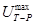
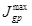
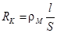
- удельное электрическое сопротивление материала токоведущих жил дренажного кабеля, Ом×м;
- длина дренажного кабеля (определяемая по данным проекта и акту на скрытые работы), м;
 - площадь сечения токоведущих жил
дренажного кабеля (определяемая по данным проекта и актам на скрытые работы),
м;
- площадь сечения токоведущих жил
дренажного кабеля (определяемая по данным проекта и актам на скрытые работы),
м;
в) установить переключателем резистора рассчитанную величину сопротивления дренажа;
г) включить электродренажную установку в присутствии представителя организации, эксплуатирующей железную дорогу, который проверяет влияние электрического дренажа трубопровода на работу цепей автоблокировки и сигнализации железной дороги;
д) измерить разность потенциалов «труба-земля» и силу тока дренажа при включенной установке электродренажной защиты в период максимальной токовой нагрузки тяговой сети железной дороги. Измерение следует проводить в соответствии с п. 4.15, а и рис. 33 настоящих ВСН. Силу тока дренажа следует определять по показаниям амперметра электродренажной установки;
е) выключить поляризованную электродренажную установку для проведения пуска и опробования системы электрохимической защиты участка трубопровода.
4.16. Пуск и опробование установок усиленной электродренажной защиты необходимо осуществлять в указанной последовательности:
а) выполнить работы в соответствии с пп. 4.15, а и 4.15, б настоящих ВСН;
б) определить возможную максимальную силу тока, проходящего через электродренажную установку при ее работе в режиме поляризованного дренажа, по следующей приближенной формуле:
где - величина возможной максимальной силы тока через дренажную установку при ее работе в режиме поляризованного дренажа, А.
При правильном выборе места подключения электродренажной установки и типа дренажа должно быть выдержано следующее неравенство:
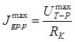 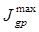
где - максимально допустимая сила тока усиленного дренажа (определенная по паспортным данным электродренажной установки), А.
Если неравенство не выдержано, то место подключения электродренажной установки на трубопроводе или рельсовой сети или тип дренажа выбраны неправильно;
в) включить установку электродренажной защиты в режиме поляризованного дренажа в присутствии представителя организации, эксплуатирующей железную дорогу. Представитель проверяет влияние электрического дренажа трубопровода на потенциальное состояние рельсового пути и работу цепей автоблокировки и сигнализации железной дороги;
г) провести измерения согласно п. 4.15, д. Если в результате измерений окажется, что сила тока через электродренажную установку превышает максимально допустимую силу тока дренажа, то тип дренажа выбран неправильно;
д) установить переключатель диапазонов и регулятор выходного напряжения в положение, соответствующее минимальному выходному напряжению, и включить установку электродренажной защиты в режиме усиленного дренажа;
е) определить наибольшее напряжение, при котором сила тока дренажа не превышает предельно допустимую силу тока электродренажной установки, а разность потенциалов «труба-земля» не становится менее нормированной ГОСТ 25812-83. Для этого при максимальной нагрузке тяговой сети железной дороги следует, увеличивая выходное напряжение электродренажной установки, измерять силу тока дренажа и разность потенциалов «труба-земля». Необходимо зафиксировать наибольшее напряжение электродренажной установки, при котором сила тока дренажа еще не превышает предельно допустимую силу тока электродренажной установки, а разность потенциалов «труба-земля» остается более нормированной ГОСТ 25812-83.
Если даже при минимальном напряжении дренажа сила тока через дренажную установку превышает предельно допустимую силу тока или разность потенциалов «труба-земля» менее нормированной ГОСТ 25812-83, значит, тип дренажа или место подключения электродренажной установки выбраны неправильно;
ж) измерить напряжение и силу тока гармонических составляющих на выходе дренажа. Измерения следует выполнять в соответствии с рекомендациями ГОСТ 9.015-74;
з) выключить усиленную электродренажную установку до проведения пуска и опробования системы электрохимической защиты участка трубопровода.
Пуск опробование и наладка протекторных установок
4.17. Пуск и опробование упакованных протекторных установок локального действия (одиночных и групповых) следует выполнять в приведенной последовательности:
а) проверить по актам на скрытые работы соответствие выполненных работ проектным решениям;
б) проверить правильность маркировки проводов в контрольно-измерительном пункте. С этой целью провода от трубопровода и протекторной установки разъединяют и высокоомным вольтметром измеряют потенциалы проводов относительно неполяризующегося медно-сульфатного электрода сравнения, установленного на грунт над трубопроводом возле контрольно-измерительного пункта. Потенциал провода от протекторной установки должен иметь более отрицательное значение, чем потенциал провода от трубопровода;
в) измерить естественную разность потенциалов «труба-земля» при отключенных протекторной установке и соседних установках катодной защиты. Требования к схеме измерения и измерительному прибору такие же, как и в п. 4.11, в настоящих ВСН;
г) подключить протекторную установку к трубопроводу и измерить разность потенциалов «труба-земля» в точке дренажа. Измерения следует выполнять в соответствии с п. 4.11, в настоящих ВСН. При подключении протекторной установки должно наблюдаться смещение разности потенциалов «труба-земля» в отрицательную сторону;
д) измерить разность потенциалов «труба-земля» в точке дренажа спустя не менее 24 ч после подключения протекторной установки;
е) выключить протекторную установку локального действия для проведения пуска и опробования системы электрохимической защиты участка трубопровода.
4.18. При пуске и опробовании автоматических протекторных установок следует выполнить работы в соответствии с пп. 4.17, а - 4.17, е и, кроме того:
проверить исправность диодно-транзисторного блока; исправный блок должен пропускать ток от трубопровода к протектору и запирать его в противоположном направлении.
4.19. Пуск и опробование протяженных протекторов, уложенных в общую траншею с трубопроводом в процессе его строительства, а также в отдельную траншею, проводится в последовательности, указанной в п. 4.17.
Пуск опробование и наладка изолирующих фланцев
4.20. Перед пуском и опробованием изолирующих фланцев необходимо выполнить следующие подготовительные работы:
а) визуальным осмотром, используя акты на врезку фланцевого соединения и скрытые работы, проверить соответствие выполненных монтажных работ (места установки фланцев, регулирующего резистора, токоотводов-протекторов, контрольно-измерительного пункта) проектным решениям;
б) проверить акты на гидравлические и электрические испытания фланцев, проведенные на заводе-изготовителе;
в) измерителем сопротивления заземления измерить величину сопротивления растеканию тока токоотводов-протекторов, эта величина не должна превышать проектную (п. 4.11, в).
Характеристики измерительного прибора должны быть такими же, как в п. 4.11, б;
г) с помощью омметра определить величины сопротивлений шунтирующего резистора и соответствие его проектным решениям;
д) измерить сопротивление изолирующих фланцев при отключенном шунтирующем резисторе и токоотводах-протекторах. Измерения выполнить с помощью двух вольтметров по схеме, приведенной на рис. 34. Сопротивление изолирующих фланцев (в Ом) определяют по формуле
где DU1 - среднее значение падения напряжения на фланцах, В;
DU2 - среднее значение падения напряжения на участке подземного металлического сооружения, Ом;
- расстояние между точками измерений, м;
R - удельное продольное электрическое сопротивление трубы, Ом×м.
4.21. Пуск и опробование изолирующих фланцев необходимо осуществлять в такой последовательности:
а) при отключенных шунтирующем резисторе и токоотводах-протекторах определить эффективность действия изолирующих фланцев. Измерения выполнить в соответствии со схемой, приведенной на рис. 34, б; при включенной установке электрохимической защиты с одной из сторон фланцевого соединения на исправных фланцах синхронный замер показывает «скачок» потенциала;
Рис. 34. Схемы включения измерительных приборов и устройств при опробовании и наладке изолирующих фланцев трубопровода:
а - измерение сопротивления; б - определение эффективности действия; в - измерение и регулирование тока в шунтирующем резисторе, 1 - трубопровод; 2 - изолирующие фланцы; 3 - контакт с трубопроводом; 4 - многопредельный вольтметр; 5 - установка катодной защиты; 6 - точка дренажа; 7 - неполяризующийся медно-сульфатный электрод сравнения; 8 - регулировочный резистор; 9 - амперметр; 10 - токоотвод-протектор
б) закоротить изолирующие фланцы до проведения пуска и опробования системы электрической защиты участка трубопровода.
Пуск опробование и наладка системы электрохимической защиты участка трубопровода
4.22. Очередность включения устройств и установок, входящих в систему электрохимической защиты участка трубопровода, определяется графиком выполнения пусконаладочных работ.
4.23. Пуск и опробование системы электрохимической защиты от коррозии участка трубопровода необходимо выполнять следующим образом:
а) измерить естественную разность потенциалов «труба-земля» в местах установки контрольно-измерительных пунктов при включенных средствах и установках электрохимической зажиты. Измерения следует проводить в соответствии с п. 4.11, в настоящих ВСН, не ранее чем через 24 ч после того, как выключены все средства и установки электрохимической защиты на всем рассматриваемом участке;
б) включить средства и установки катодной защиты и отрегулировать режим их работы, при котором в точке дренажа разность потенциалов «труба-земля» будет соответствовать ГОСТ 25812-83;
в) включить установки электродренажной защиты. При использовании поляризованной электродренажной установки величину сопротивления дренажа регулируют с учетом величины дренируемого тока, которая не должна превышать предельно допустимую величину тока электродренажной установки (по п. 4.15, д). При использовании усиленной электродренажной установки напряжение на ее выходе регулируют так, чтобы ток дренажа не превышал предельно допустимый ток дренажной установки (п. 4.16, д);
г) измерить в местах установки контрольно-измерительных пунктов разность потенциалов «труба-земля» по истечении 72 ч катодной поляризации трубопровода. В зоне действия установок катодной и протекторной защиты измерения следует проводить в соответствии с п. 4.11, в настоящих ВСН.
На участках трубопровода, подверженных влиянию блуждающих токов, измерения и обработку результатов необходимо проводить в соответствии с рекомендациями ГОСТ 9.015-74.
В зоне действия блуждающих токов разности потенциалов «труба-земля» следует измерять во время максимальной и минимальной токовой нагрузки рельсовой сети и в соответствии с п. 4.15, д настоящих ВСН;
д) включить установки протекторной защиты;
е) включить изолирующие фланцы и отрегулировать сопротивление резистора;
ж) включить и отрегулировать токи в электрических перемычках (при согласованной защите с близлежащими металлическими подземными сооружениями) для установления заданной проектом разности потенциалов «сооружение-земля»;
з) вычертить по результатам измерений диаграмму распределения разности потенциалов «труба-земля» вдоль всего участка трубопровода. В зонах действия блуждающих токов следует наносить минимальные, средние и максимальные значения разности потенциалов «труба-земля».
5. СДАЧА ЗАКАЗЧИКУ ЗАКОНЧЕННЫХ СТРОИТЕЛЬСТВОМ СРЕДСТВ И УСТАНОВОК ЭЛЕКТРОХИМИЧЕСКОЙ ЗАЩИТЫ
Сдачу заказчику законченных строительством средств и установок электрохимической защиты трубопроводов осуществляют в соответствии с «Строительство магистральных и промысловых трубопроводов. Контроль качества и приемка работ».
6. ОХРАНА ОКРУЖАЮЩЕЙ СРЕДЫ ПРИ СООРУЖЕНИИ ЭХЗ
6.1. Сооружение установок электрохимической защиты трубопроводов от коррозии следует осуществлять в соответствии с «Строительство магистральных и промысловых трубопроводов. Охрана окружающей среды».
6.2. Под окружающей средой понимается вся совокупность природных элементов в полосе строительства и прилегающих к ней территорий.
6.3. Основой охраны окружающей среды при сооружении ЭХЗ является соблюдение требований по охране окружающей среды на всех этапах технологической последовательности выполнения работ с обязательным проведением рекультивации после их завершения.
6.4. Природоохранные мероприятия должны проводиться в соответствии со специфическими особенностями окружающей среды, характерными для природоохранительной зоны, в пределах которой осуществляется сооружение объектов ЭХЗ.
6.5. Природоохранительные мероприятия и рекультивация земель после завершения сооружения ЭХЗ должны носить комплексный характер, или должно обеспечиваться не только сохранение отдельных природных элементов (рельефа, почв, воды, воздуха, растительного и животного мира), но и ландшафтов в целом.
6.6. Объем необходимых природоохранительных мероприятий снижается путем сооружения ЭХЗ как единого целостного процесса со строительством трубопровода. Поточность работ позволяет избежать проведения консервационных природоохранительных мероприятий во время перерывов между различными видами работ и в значительной мере ограничить их рекультивационными мероприятиями.
6.7. Рекультивационные работы должны быть признаны обязательной составной частью технологической цепи сооружения ЭХЗ во всех природоохранительных зонах.
6.8. Для уменьшения неблагоприятных воздействий на окружающую среду при сооружении ЭХЗ во всех природоохранительных зонах необходимо всемерно сокращать площади участков строительства, ограничивая их минимальными технологически необходимыми размерами.
6.9. При проведении работ по сооружению ЭХЗ следует избегать загрязнений окружающей среды горюче-смазочными, изоляционными материалами, строительными отходами, для чего необходимо на стадии проектирования ЭХЗ предусмотреть способы переработки или захоронения отходов.
6.10. На всех этапах сооружения ЭХЗ следует предусмотреть мероприятия, нейтрализующие или предотвращающие неблагоприятные рельефообразующие процессы, возникающие или активизирующиеся вследствие строительства объектов ЭХЗ.
6.11. На всех этапах строительства ЭХЗ следует избегать нарушения естественной дренажной сети, восстанавливать ее в близком к существовавшему до начала строительства виде в ходе рекультивационных работ.
6.12. При сооружении объектов ЭХЗ необходимо обеспечить соблюдение правил противопожарной безопасности, особенно при работах в пределах лесной зоны и зоны многолетнемерзлых пород в месяцы с положительными среднесуточными температурами воздуха.
7. ТЕХНИКА БЕЗОПАСНОСТИ ПРИ СООРУЖЕНИИ ЭХЗ
7.1. Сооружение установок электрохимической защиты трубопроводов от коррозии следует осуществлять по проекту организации строительства и проекту производства работ в соответствии со следующей нормативной документацией по безопасности труда:
СНиП III-4-80 «Техника безопасности в строительстве»;
«Правила устройства электроустановок» ПУЭ, утвержденные Минэнерго СССР;
«Правила технической эксплуатации электроустановок потребителей и правила техники безопасности при эксплуатации электроустановок потребителей», утвержденные Минэнерго СССР, Главгосэнергонадзором;
«Правила техники безопасности при строительстве магистральных трубопроводов», утвержденные Миннефтегазстроем;
«Правила безопасности в нефтегазодобывающей промышленности», утвержденные Госгортехнадзором.
7.2. Персонал, осуществляющий строительство и монтаж установок электрохимической защиты, должен пройти обучение и инструктаж по охране труда в соответствии с ГОСТ 12.0.004-79. К производству строительно-монтажных работ могут быть допущены рабочие не моложе 18 лет, прошедшие инструктаж, обучение и проверку знаний в соответствии с ГОСТ 12.0.004-79.
7.3. Все рабочие должны быть обеспечены спецодеждой, спецобувью и защитными приспособлениями в соответствии с «Типовыми отраслевыми нормами бесплатной выдачи спецодежды, обуви и других защитных приспособлений» (М.: Недра, 1984).
7.4. При выполнении работ с использованием оборудования, механизмов, устройств и приборов необходимо соблюдать меры техники безопасности, указанные в соответствующих инструкциях по их эксплуатации.
7.5. Работы в зонах действующих магистральных и промысловых нефтегазопроводов необходимо осуществлять в соответствии с «Правилами безопасности в нефтегазодобывающей промышленности» и «Правилами безопасности при эксплуатации магистральных газопроводов».
7.6. Работы в зонах электрифицированных железных дорог следует проводить на основании письменного разрешения и в присутствии представителя соответствующей службы эксплуатации железнодорожного транспорта.
7.7. Земляные работы в местах пересечения с подземными сооружениями (трубопроводами различного назначения, электрическими кабелями и кабелями телемеханики и связи и др.) необходимо вести с соблюдением правил охраны этих сооружений на основании письменного разрешения и в присутствии представителя служб эксплуатации этих сооружений.
7.8. В местах пересечения трассы с подземными коммуникациями механизированная разработка грунта в зоне менее 2 м от коммуникаций не разрешается. В этом случае разработку производят вручную.
7.9. Если на трубопроводе имеются опасные электрические напряжения, наведенные от ЛЭП к электрифицированной железной дороге, то работы по сооружению устройств электрохимической защиты должны проводиться с соблюдением мер электробезопасности. Наличие этих напряжений обнаруживают предварительными измерениями переменного напряжения между сооружением и землей.
7.10. При монтаже изолирующих фланцев, катодных и измерительных выводов и других работ, выполняемых на участке трубопровода, не врезанном в магистральный трубопровод и находящемся в зоне действия высоковольтных линий электропередачи, блуждающих токов железных дорог или токов катодных установок, следует устанавливать электрическую перемычку между трубопроводами и заземлять этот участок в месте производства работ, причем сопротивление растеканию тока защитного заземления не должно превышать 10 Ом. В этом случае ближайшие действующие установки катодной и электродренажной защиты должны быть выключены.
7.11. Защитное заземление должно соответствовать требованиям «Правил устройства электроустановок» ПУЭ-86.
7.12. Установки катодной и электродренажной защиты должны иметь ограждения, запирающиеся на замок, исключающие доступ к оборудованию электрохимической защиты посторонних лиц и животных, предупредительные знаки и надписи.
7.13. Подключать установку катодной и усиленной дренажной защиты к линии электропитания следует только после того, как будет снято с нее напряжение и наложено на линию защитное заземление.
7.14. Подсоединять кабели и провода к устройствам катодной и дренажной защиты можно, только если они обесточены.
7.15. Дренажный кабель следует подключать сначала к дренажной установке, на которой выключен выключатель, а затем к рельсовой сети.
7.16. Установки катодной и дренажной защиты, питающиеся от воздушных линий электропередачи, должны быть оснащены устройствами грозозащиты.
7.17. Проводить работы по строительству электрохимзащиты во время грозовой активности категорически запрещается.
7.18. Включать оборудование электрохимической защиты следует по указанию производителя работ данного участка после того, как полностью окончены монтажные работы, проверена правильность их выполнения и удалены рабочие с электролиний.
7.19. К сварочным работам допускаются сварщики, имеющие удостоверение о сдаче экзаменов и испытаний в соответствии с «Правилами аттестации сварщиков».
7.20. Термитные патроны и термитные спички следует хранить упакованными раздельно и в разных местах.
7.21. Вскрывать термитные патроны и коробки с термитными спичками следует непосредственно перед началом работ.
7.22. При термитной сварке упаковку термита и термитных спичек необходимо хранить на расстоянии не менее 5 м от места сварки.
7.23. При термитной сварке запрещается передавать термитные патроны и термитные спички.
7.24. Работа с газосварочной аппаратурой, ее транспортировка и хранение должны быть осуществлены в соответствии с «Правилами техники безопасности и производственной санитарии при производстве ацетилена, кислорода и газопламенной обработки металла».
7.25. Расстояние от места сварочных работ до места складирования легковоспламеняющихся или огнеопасных материалов должно быть не менее 50 м.
7.26. Технологическое оборудование, а также костюм и рукавицы газового сварщика не должны быть загрязнены растительными, животными и минеральными жирами.
7.27. Подсоединение редуктора к газовому баллону следует выполнять специальным ключом, который должен постоянно находиться у сварщика.
7.28. Перед присоединением редуктора к баллону штуцер баллона необходимо продуть, открыв на короткое время вентиль, причем люди должны быть удалены из зоны действия штуцера.
7.29. После установки редуктора на газовый баллон следует проверить его работоспособность: на короткое время плавно открыть и закрыть вентиль, люди не должны находиться в зоне действия штуцера редуктора.
7.30. Сварщик не должен выпускать из рук горящую горелку, класть ее на сварочный стол следует, предварительно выключив пламя.
7.31. При включении пламени горелки следует открыть кислородный вентиль, после чего подать пропан-бутан и поджечь газовую смесь горелки.
7.32. При отключении газовой горелки сначала необходимо закрыть вентиль баллона с пропан-бутаном, а затем с кислородом.
7.33. Сварщик должен следить за тем, чтобы вентили горелки во время перерыва в работе были перекрыты.
7.34. Газовую горелку необходимо периодически охлаждать и прочищать, а также следить за правильностью регулировки подачи смеси.
7.35. При перерывах в работе на продолжительное время вентили кислородного и пропан-бутанового баллонов должны быть закрыты, а нажимные винты редуктора ослаблены.
ПРИЛОЖЕНИЕ
Рекомендуемое
ПЕРЕЧЕНЬ
исполнительной документации линейных сооружений электрохимической защиты
магистральных и промысловых трубопроводов
1. Акт приемки электрооборудования под монтаж.
2. Акт на скрытые работы при сооружении заземления (рабочего, защитного, линейно-защитного).
3. Акт на скрытые работы при сооружении анодного заземления.
4. Акт на скрытые работы при прокладке кабеля.
5. Акт на скрытые работы при сооружении контрольно-измерительных пунктов.
6. Акт на электромонтажные работы при сооружении устройств электрохимической защиты.
Приложение 1 к акту 5. Ведомость изменений и отступлений от проекта.
Приложение 2 к акту 5. Ведомость технических документов.
Приложение 3 к акту 5. Ведомость смонтированного оборудования.
7. Акт рабочей комиссии о готовности законченной строительством системы электрохимической защиты участка трубопровода.
СОДЕРЖАНИЕ